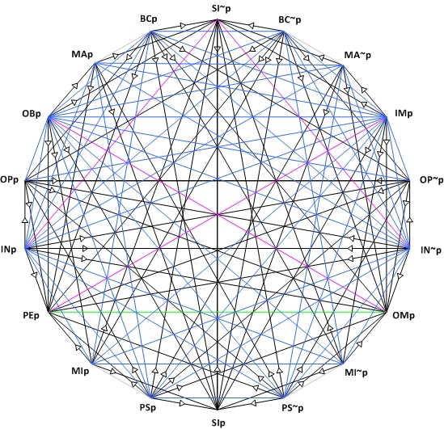
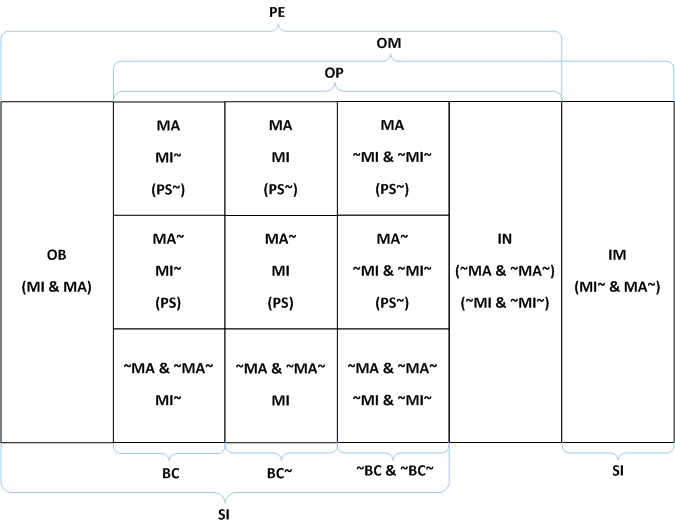

Supplement to Deontic Logic
A Framework for Common Sense Morality in Non-Conflict Contexts
Assume that we have a language of classical propositional logic with these additional (personal but non-agential) primitive unary operators:
OBp: It is Obligatory (for S) that pMAp: The Maximum (for S) involves p
MIp: The Minimum (for S) involves p
INp: It is Indifferent (for S) that p
We might then tentatively analyze some other agential deontic notions as follows:
S must bring it about that p OBBAp S ought to bring it about that p MABAp The least S can do involves bringing it about that p MIBAp It is a matter of indifference for S to bring it about that p INBAp
Suppose that I am obligated to contact you to conduct some business, and that I can do so by emailing you, calling you, or stopping by. Add that these are the only ways to conduct the business.[1] Now imagine that the morally relevant value of these actions matches the extent to which the response is personal. Assuming you would not let me conduct our business twice, the three alternatives are exclusive. Then it is obligatory for me that I contact you in one of the three ways, but no one in particular, since any one of the three will discharge my obligation to contact you. Now if I choose to discharge my obligation in the minimally acceptable way, I will do so by email rather than by telephone or in person. So doing the minimum involves emailing you. On the other hand, if I conduct the business in person, I will have discharged my obligation in the optimal way. Doing the maximum (what morality recommends) involves stopping by your place. Finally, we can easily imagine that it is a a matter of moral indifference that I wear my black socks today. This illustrates one application of the four primitive operators.
In addition to the definitions of PEp, IMp, OMp, and OPp used in this essay, some additional defined operators, and their intended readings, can now be given:
BCp =df PEp & MI~p (It is Beyond the Call for S that p) PSp =df PEp & MA~p (It is Permissibly Suboptimal for S that p) SIp =df ~INp (It is Significant for S that p)
Continuing with our example, note that although the three alternatives, conducting the business by email, phone, or in person, are not on a par morally speaking, each is still morally optional. Now we saw that doing the minimum involves e-mailing you. But suppose that rather than e-mailing you, I either call or stop by. Both of the latter alternatives are beyond the call of duty. Philosophers often use the term "supererogatory" instead.[2] In each case, I will have done more than I had to do — more good than I would have if I had done the minimum permitted. On the other hand, if I do not stop by, I will have done something sup-optimal, but, since emailing you and calling you are each nonetheless permissible, each is permissibly suboptimal. Finally, although each of the three ways of contacting you is optional, none is without moral significance. For whatever option I take of the three, I will have done something beyond the call or I will have done only the minimum; in either case, I will have done something with moral significance.
The increased complexity brought on by the enriched expressive power is graphically reflected in these natural analogues to SDL's deontic hexagon and threefold partitions.

The Deontic Octodecagon: Recall our prior scheme: arrowed lines represent implications; blue lines connects contraries; green lines connects sub-contraries, lavender lines connect contradictories, plain gray lines are purely aesthetic.

The Twelvefold Partition: The partition is drawn with the black lines. As with the Traditional Threefold Classification, the twelve cells are mutually exclusive and jointly exhaustive. Parenthetical operators, as well as those tagged to ice-blue curly brackets outside the partition, highlight the location of various non-finest classes within the partition.
Semantic structures combining the two previously discussed approaches to SDL semantics via a simple accessibility (acceptability) relation and via an ordering of worlds serve to provide a simple and cohesive semantic framework for all these notions (McNamara 1996a and 1996b).
Return to Deontic Logic.